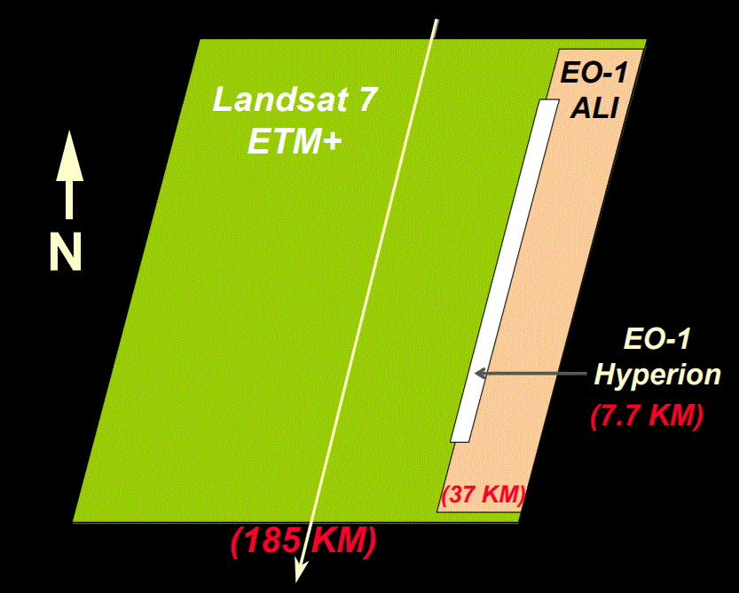
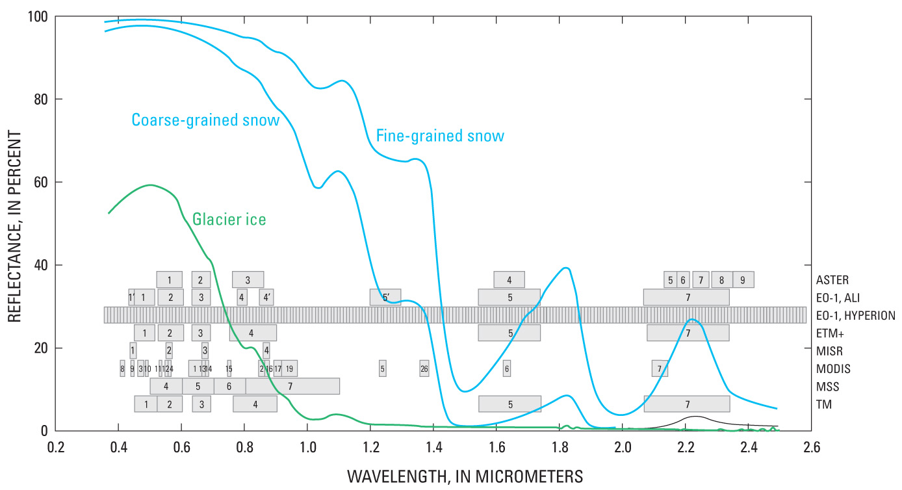

Log scale for wavelength, so the Hyperion bands appear to get closer.
ASTER, ALI, Hyperion all have similar pixel to ETM+ (except for the pan band)
MODIS has much larger pixel sizes.
Image source, NASA
https://ieeexplore.ieee.org/document/1026135
The Hyperion sensor
242 spectral bands
356 nm to 2577 nm
nominal bandwidths of 10 nm
Two detector arrays
visible and near-infrared (VNIR: 356 nm to 1058 nm)
short-wave infrared (SWIR: 852 nm to 2577 nm).
0.63-degree across-track field-of-view
altitude of 705 km
swath width of 7.6 km
30-m pixels.
Level 1B data have been used for this study. This data processing level provides
a data set with 198 bands covering the VNIR from 427 nm to 925 nm and the SWIR
from 912 nm to 2394 nm. Accordingly, VNIR bands 1 to 7 and 58 to 70 as well as
SWIR bands 71 to 76 and 225 to 242 have been eliminated (set to 0 or −1).
https://archive.ll.mit.edu/publications/journal/pdf/vol15_no2/15_2-08.pdf
Hyperion has two detectors (SWIR and VIS/NIR)
Two scaling factors for radiance (80 and 40)
|
 |
Scene geometry, from NASA |
|
|
|
|
|
The
Hyperion hyperspectral sensor has very many bands with small
bandwiths compared to the multispectral systems. Log scale for wavelength, so the Hyperion bands appear to get closer. ASTER, ALI, Hyperion all have similar pixel to ETM+ (except for the pan band) MODIS has much larger pixel sizes. Image source, NASA |

USGS Professional paper 1386A
 |
Hyperion image of the west side of the Sheep Range in southern Nevada.
|
Getting archived Hyperion data
References
Last revision 6/27/2022